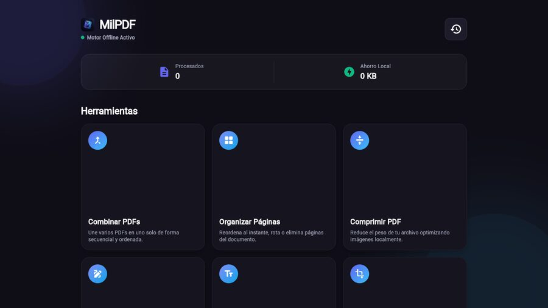
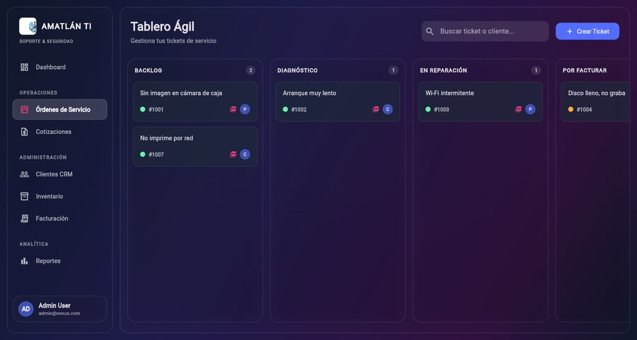

Software I designed, built and maintain. Demos run right in your browser.
Live demo
Product · PDF tools
MilPDF
Merge, reorder, compress, sign, fill in text and convert PDFs offline. Everything is processed in your browser or on your machine: your files are never uploaded to a server.
FlutterDartWebDesktopPDF
Live demo
Product · Business management
Service Orders
A system for my IT-support business: Kanban board for service orders, PDF quotes, client CRM, inventory, invoicing and charted reports.
FlutterSQLiteKanbanPDFReports
🧾
Product · Restaurant, pharmacy & retail
Milian POS
A multi-purpose point of sale, evolved from the system I built for a shoe store with 7,200+ items. Three modes in one app: restaurant (table map, orders, split bills, recipes), pharmacy (batches and expiry dates) and retail (layaway and returns). Cash control, thermal-printer tickets, backups and licensing. Version 2.0 with automated tests.
FlutterDrift (SQLite)ESC/POSRestaurantPharmacyRetail
Own product · private source code
🧬
Research · AI & health
Skin Spectrum
Skin-anomaly detection with AI. TensorFlow Lite model trained on 6,000+ images from an international oncology database: 92% accuracy. I led development and machine learning for a team using Scrum and Kanban.
FlutterTensorFlow LiteMachine learningScrum
⚙️
In progress · DevOps
DevOps Lab
An environment that rebuilds itself from code in about 4 minutes: simulated VPC networks on Docker, GitLab, SonarQube, an image registry and runners, with OIDC-authenticated deployments. The pipeline blocks vulnerable dependencies and scans images with Trivy; an API dashboard and a role-based Flutter app operate it. 250+ automated tests.
DockerGitLab CISonarQubeTrivyOIDCFlutter
Source not public yet
⬇️
Tool · Windows
MilDownload
Windows desktop app with a download queue, history, playlists, built-in player and settings, featuring a glass-style interface on top of yt-dlp.
FlutterWindowsyt-dlpmedia_kit
Private source code
📚
Featured · Augmented reality
Nantlico · Free textbooks
Augmented-reality app (3D models, animations, audio and video) integrated into the SEP’s free textbooks and deployed nationwide. Professional residency 2026 at UTCV, distributed by CONALITEG. I fixed the download manager (asset bundles), built the AR experience for the web app and validated APK builds before release.
UnityAugmented realityAsset bundlesAndroidWeb
🏬
Production · Grupo Salinas
Management & supervision app
A single Flutter codebase for Android, iOS and web, with a microservices backend on AWS. Runs in 1,040 branches.
FlutterAWS ECS FargateRDSDockerKubernetes
Private client project
🎫
Client · Legal services
Queue management
Web app for a law firm that classifies each client by legal need and speeds up service.
WebQueue management
Private client project
Web
SI Market
Online-store website: home page, categories and responsive design.
HTMLCSS
Backend
REST APIs with Spring Boot
Three versions of the same API, each with a different database.
JavaSpring BootMongoDBPostgreSQLMySQL
Machine learning
Convolutional neural network
Jupyter notebook training a CNN.
PythonJupyterCNN
Academic · UTCV
Integrative project
Web system with authentication, categories and staff management.
PHPMySQL
Academic · UTCV
Web project
PHP site with gallery, videos, photography and commercial sections.
PHPJavaScriptCSS
Mobile
Skin Spectrum v1
First version of the cross-platform Flutter app.
FlutterDart